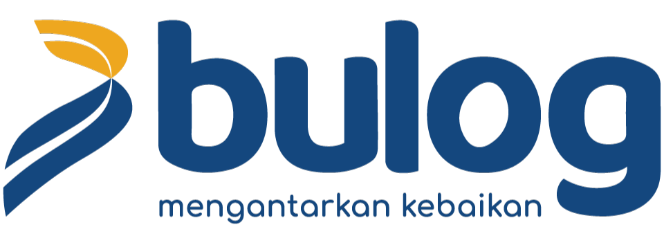

Siap untuk Peluang Karir Baru
Paduan Estetika &
Inovasi
Digital.
Saya adalah seorang Visual Communication & Digital Transformation Designer dengan keahlian komprehensif di bidang UI/UX, Front-End Development, dan Desain Grafis. Berpengalaman dalam memberikan solusi visual strategis untuk berbagai institusi besar termasuk BUMN dan Kementerian
Berpengalaman memberikan dampak positif di:


